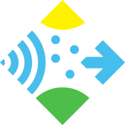

Toggle navigation

openSenseMap
{{ header.counts.boxes }}
{{'SENSEBOXES'|translate}}
{{ header.counts.measurements }}
{{'MEASUREMENTS'|translate}}
{{'EXPLORE' | translate}}
{{'INTERPOLATION' | translate}}
{{'FILTER' | translate}}
Filter active
{{'DATADOWNLOAD' | translate}}
{{'INFO' | translate}}
{{'CHANGE_LANG' | translate}}
{{'ACCOUNT_LOGIN'|translate}}
{{'ACCOUNT_SIGNED_IN_AS'|translate}}
matpfe
{{'ACCOUNT_DASHBOARD'|translate}}
{{'ACCOUNT_NEW_SENSEBOX'|translate}}
{{'ACCOUNT_SETTINGS'|translate}}
{{'ACCOUNT_SIGN_OUT'|translate}}